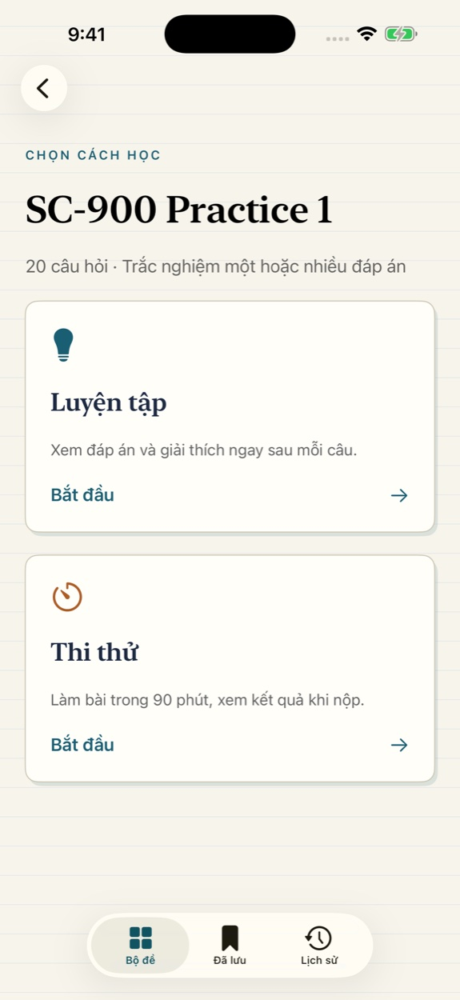
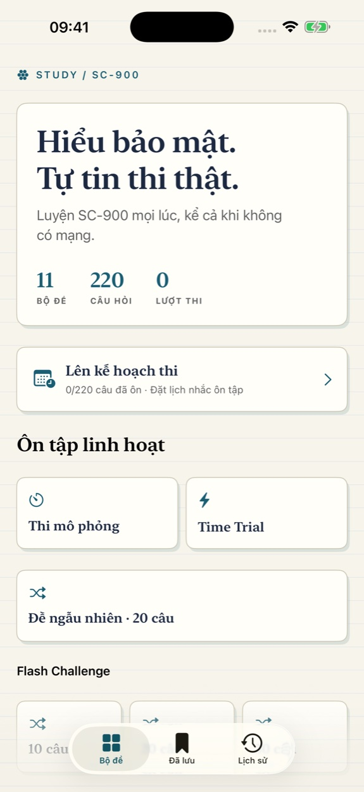
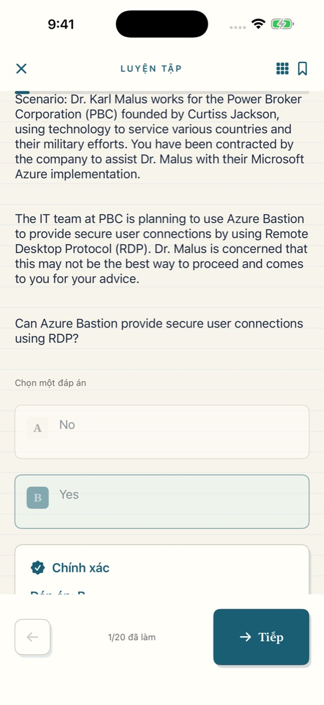

Bộ đề & lời giảiPractice & explanations
11 bộ đề, 220 câu hỏi một hoặc nhiều đáp án. Kiểm tra và xem giải thích ngay khi luyện.11 sets, 220 single- or multiple-answer questions. Check your choices and read explanations immediately.
Microsoft Security · Compliance · Identity
Luyện chứng chỉ SC-900 với 220 câu hỏi trong 11 bộ đề, lời giải tức thì, thi mô phỏng và lộ trình ôn tập — hoàn toàn ngoại tuyến.
Prepare for SC-900 with 220 practice questions in 11 sets, instant explanations, timed mock exams and focused review — fully offline.


Luyện tập có mục tiêuPractice with purpose
11 bộ đề, 220 câu hỏi một hoặc nhiều đáp án. Kiểm tra và xem giải thích ngay khi luyện.11 sets, 220 single- or multiple-answer questions. Check your choices and read explanations immediately.
30 câu trong 90 phút, ngưỡng luyện tập 85%. Xem kết quả và từng câu sau khi nộp.30 questions in 90 minutes, with an 85% practice target. Review results and every answer afterward.
Time Trial 20 câu / 5 phút, Flash Challenge 10/20/30 câu, luyện ngẫu nhiên hoặc ôn câu sai, bỏ lỡ, đã lưu.20 questions in 5 minutes, 10/20/30-question Flash Challenges, random practice and review of wrong, skipped or saved items.
Tiến độ trên thiết bịProgress on your device
Lưu phiên, lịch sử, câu đánh dấu và ngày thi ngay trên máy. Nếu bạn cho phép, ứng dụng gửi nhắc lịch học bằng thông báo cục bộ.Sessions, history, bookmarks and exam date stay on-device. Optional local notifications remind you to study.

Không tài khoản, không quảng cáo, không mua trong ứng dụng. Cần trợ giúp hoặc muốn góp ý nội dung?No account, ads or in-app purchases. Need help or want to report a question?